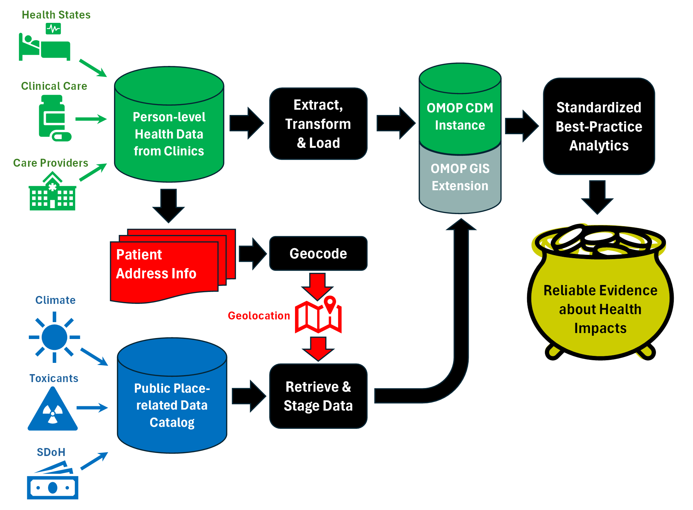

OHDSI GIS
OHDSI GIS  OHDSI GIS
WG
OHDSI GIS
WG
OHDSI Geographic Informations Systems (GIS)
Mission
Improve the health of populations by generating reliable evidence from integrated geospatial and person-level health data.
Collaboration Approach
Like most of OHDSI, we use Github and MS Teams for collaboration, version control, etc. There are no perfect options for supporting collaboration. We’ll help you accomodate to ours as best we can. In particular, we use Github for managing tasks like defining and monitoring progress on OHDSI studies, infrastructure roadmaps, technical issues, etc.
We review progress and get input from the broader group at weekly meetings on Fridays. Leaders of specific projects within the GIS workgroup schedule and hold meetings with subgroups outside the main Friday meeting. Those other meetings are where most of the work on use cases and advancing technical infrastructure gets done.
Apart from the groups’ offical leadership, many members make fundamental contributions to the group’s decisions, strategies, and products.
All are welcome. We’d love to work with you. Please see our page on proposing new use cases. If you are new and are considering using the GIS toolchain to do research or contibuting to the group’s work, we will schedule a separate meeting with you to help you figure out what manner of participation makes sense for you.
New to OHDSI? First sign up for an OHDSI MS Teams account here. It’s easy peasy. Already have an OHDSI Teams account? Great. Just sign up for the GIS Workgroup here.
The main workgroup call is on MS Teams every Friday at 10 AM US Eastern Time (Meeting Link). We are always looking for better ways to accomodate the time constraints of valued members around the world. Please let us know if this schedule is an obstacle.
GIS Toolchain
The GIS toolchain consists of extensions to the OMOP schema, extensions to the OMOP Vocabulary, and GIS-specific software for acquiring and working with geospatial data. Together, these enable researchers to use health-related attributes of the regions where patients live in OHDSI study cohort definitions. For example, you can use the GIS toolchain to define cohorts that include regional data on exposure to toxicants or social deprivation along with EHR data on relevant health outcomes. The toolchain also includes informatics resources that support integration with the main OHDSI tool stack (HADES) and integration with externally supported solutions for geocoding and for finding and deriving relevant data sources from catalogs of available data sources.
Importantly, the toolchain allows integrated analysis of geospatial and EHR data without sharing any sensitive patient location data.
OMOP GIS schema extensions
The External_Exposure table is an extension to the main OMOP schema. It holds data on things that can affect health that are associated with the places where patients live. The Location_History table contains information on patient’s residence and the dates during which they lived in that location. The DDLs and associated documentation for the External_Exposure table and the Location_History table are here and here respectively. The entity-relationship diagram showing the joins between these tables and the main OMOP schema is here.
OMOP Vocabulary extensions
The GIS extensions to the OMOP Vocabulary cover geometries, toxicants, and social determinants. They are used to represent a very large set of entities that can affect health and their relationships. The draft versions of these vocabularies are available here. They are based on mature existing ontologies and were developed by GIS workgroup members who are part of the OHDSI Core Vocabulary team in accordance with the guiding principles for OMOP vocabulary development, quality assurance, and integration. Current work on their validation in real use cases is expected to support their eventual acceptance as versioned community-maintained extensions of the core OMOP Vocabulary.
gaiaCore
The gaiaCore software and associated gaiaDB schema support specification of attributes and geographic shapes in publicly available datasets. This specification allows the tables in the GIS schema extension to be joined with patient-level clinical data stored in the main OMOP schema. The current Beta release of gaiaCore software and its documentation are here.
Guidance
The GIS toolchain requires patient addresses to be geocoded into representations that GIS software expects; for example, the latitude and longitude coordinates of street addresses or the coordinates of the lines that define a postal region. The OHDSI GIS workgroup does not provide or maintain software that does this geocoding. The GIS Workgroup does provide guidance about privacy-preserving options for geocoding address information and considerations for using available open-source and comercial geocoding approaches. The workgroup is also developing guidance to aid researchers in making informed decisions about selecting and working with alternative geospatial data sources that are relevant to addressing a research question.
Support for integration with OHDSI’s technical ecosytem
The GIS Workgroup provides modified versions of the BroadSea container that inlcudes versions of the OHDSI Vocabulary that include draft the GIS vocabularies and the other components of the toolchain. Modified versions of the Tufts Synthetic Data and associated for demonstrating the use of the HADES PLP package to predict incident respiratory conditions using regional air quality data are included in the container. The workgroup is developing a robust approach to working with available geospatial data sources via catalogs. The approach uses schema.org-compliant standards and federated metadata sharing methods widely used in the GIS community to share information about available datasets.

The green and black elements at the top of the figure above show the production of reliable evidence by applying standardized analytics to standardized person-level clinical data. The extension of this approach by the GIS toolchain is shown below that. Geocoded patient addresses are linked to geospatial datasets and standardized in the OMOP GIS extension. The GIS toolchain uses the same modeling approach as the main OMOP CDM and vocabulary. This allows the same best practice analytics to be applied simultaneously to both person-level clinical data and geospatial data on exposures outside the clinic. As with OHDSI’s use of clinical data, analyses of external exposures are done without sharing patient address information.
Goals
The OHDSI GIS Workgroup carries out work in support of its mission by pursuing the following goals:
- Support OHDSI studies that use the GIS toolchain
- Conduct studies that use the GIS toolchain
- Advance the development of the GIS toolchain
- Facilitate the use of externally supported privacy-protecting geocoding software
- Develop data cataloging resources and guidance that enable reuse of specific geospatial datasets in OHDSI studies
Publications/Presentations
OHDSI GIS Toolchain Live Demonstration (2024 OHDSI Symposium Video)
OHDSI GIS Infrastructure (2023 OHDSI Symposium Poster, Abstract)
Toxins Vocabulary (2023 OHDSI Symposium Poster, Abstract)
OHDSI GIS Workgroup October 10, 2023 Update (Video)
OHDSI GIS Workgroup 2023 Objectives and Key Results (Video, slides)
OHDSI GIS Workgroup August 23, 2022 Update (Video)